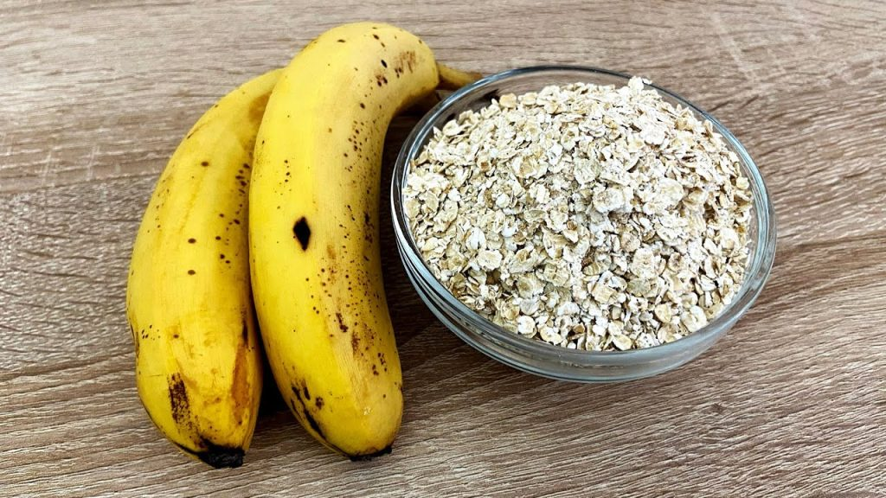

Skyr mit Haferflocken

Beschreibung
Bei dem Gericht handelt es sich um das Frühstuck der Champions!
Macht dich bereit für den Tag. Tägliche Einnahme zwingend erforderlich!
Zutaten:
- Skyr
- Haferflocken
- Milch
- Flavourpowder
- Liebe
- Befülle eine Schüssel mit Skyr, Flavourpowder, Haferflocken und Milch.
- Verrühre alles gut miteinander.
- Genießen!
Home